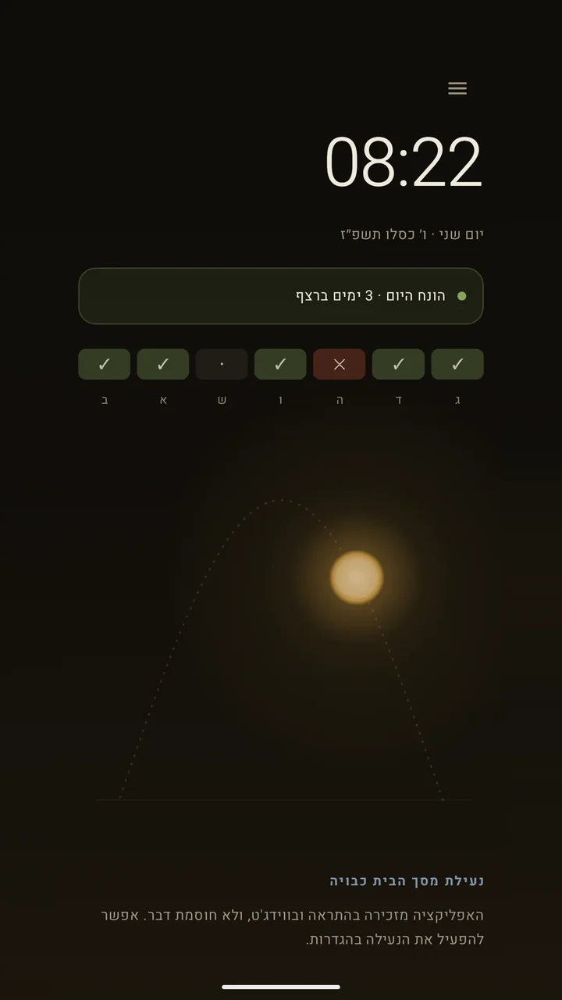
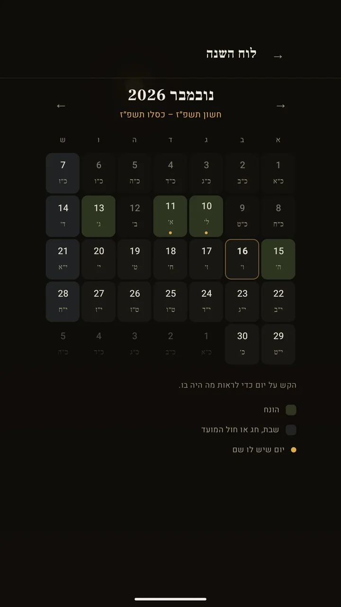

אפליקציה לאנדרואיד
הנחתי
אפליקציית אנדרואיד שעוזרת להקפיד על הנחת תפילין כל בוקר: הטלפון נפתח ברגע שמדווחים שהתפילין הונחו.
- זמני היום ל-54 ערים או לפי המיקום, מחושבים במכשיר עצמו
- יודעת מתי לא מניחים: שבתות, חגים, חול המועד לפי המנהג, ובתשעה באב מניחים רק במנחה
עוד פרטים
- סדר הנחת תפילין בנוסח אשכנז וספרד, פרשת השבוע ותהילים
- עובדת בלי אינטרנט, ושום דבר לא נשלח לשום מקום
- Android
- Kotlin
- Gradle